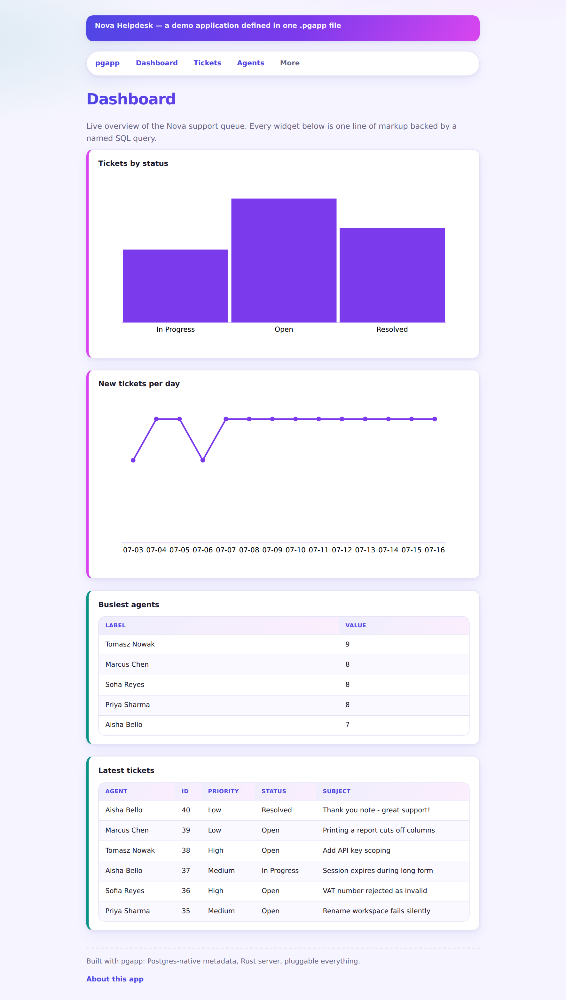

pgapp is an Oracle APEX–inspired low-code framework written in Rust. Describe an app in one markup file; pgapp syncs it into in-database metadata and a fast Axum server renders the whole thing — reports, forms, charts, navigation. Every screenshot on this page is the real framework running the ~200-line demo file on a live Postgres.
app "Helpdesk" { theme: vivid auth { } entity "tickets" { field subject: text required field status: text default Open field satisfaction: integer } query by_status { sql: "select status as label, count(*) as value from helpdesk_tickets group by status" } page "Dashboard" { chart "Tickets by status" from query by_status { type: bar x: label y: value } region "Latest tickets" from query recent } page "Tickets" { report "All tickets" of tickets { page_size: 8 } form "Create / edit" of tickets { item satisfaction as slider (min:"1", max:"5") } } }

Eleven short, screenshot-driven pages — each one part of the framework, demonstrated on the same live Helpdesk app running against real Postgres.
Keyset pagination, edit/delete row actions from a sibling form, pluggable icons.
Read this part → 02Search across all columns, filter by column, and save private or public views.
Read this part → 03Text, checkbox, radio group, read-only, slider, and popup-LOV item types.
Read this part → 04Server-rendered inline SVG by default, or plug in canvas/D3/anything.
Read this part → 05Every row is its own inline form, plus an add-new row at the bottom.
Read this part → 06Bind-parameterized SQL, reused across charts, regions, reports, and popups.
Read this part → 07argon2 passwords, server-side sessions, role-gated pages, a built-in Users admin screen.
Read this part → 08Named Rust action modules, plus declarative show/hide/set/refresh client behavior.
Read this part → 09Read-only query-backed entities, plus deploy-time schema/type verification.
Read this part → 10Same app, same database, same request — two completely different looks.
Read this part → 11Split a growing app into a directory of files, Terraform-style, with no import graph.
Read this part →Apps, entities, pages, and components are rows in pgapp_meta.*. The markup is parsed once and synced in; the server always serves off the database.
A single Axum binary owns routing and builds parameterized SQL from metadata on the fly. One process, no Node, no JVM.
Identifiers are lexer-restricted to a safe charset; every user value is a bind parameter cast in SQL. Verified live with injection-shaped payloads.
Item types, themes, icon packs, chart libraries — each is a file dropped into a directory with a tiny contract, selected by an env var.